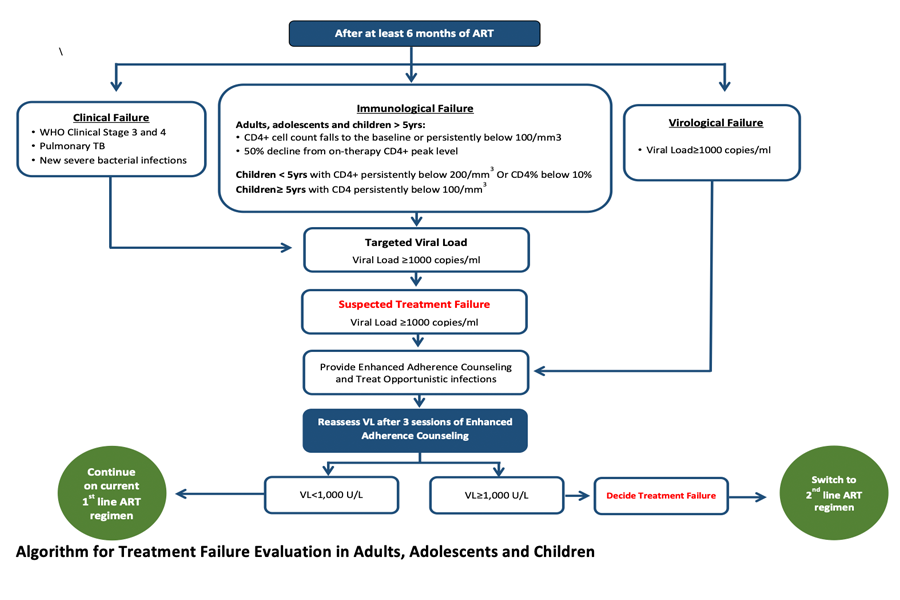
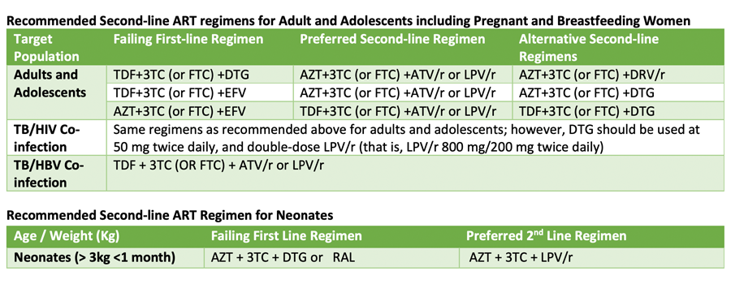
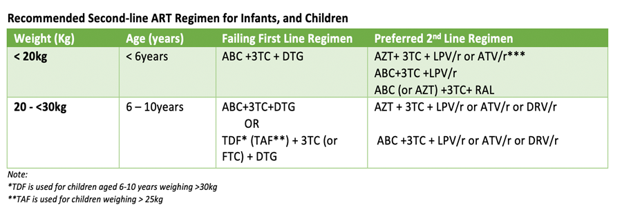
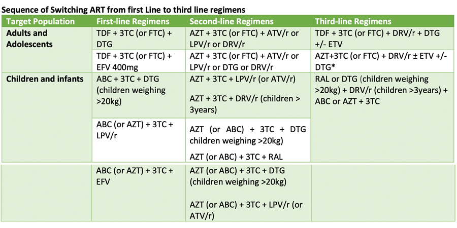

HIV treatment failure may be defined as sub-optimal treatment outcomes following the initiation of ART. Although HIV treatment failure can be classified as either virologic, immunologic or clinical failure; virologic treatment failure is the best measurement of treatment failure. Virologic failure is defined as a VL above 1000 copies/ml based on two consecutive VL measurements 3 months apart, and after an adherence intervention.



Third-line therapy refers to the ART offered to PLHIV in response to failure of second-line treatment. Efforts should be made to assess and optimize adherence and rule out any significant drug interactions. It is recommended that switch to third-line therapy be left in the hands of HIV specialists with requisite experience and expertise in the management of treatment-experienced HIV patients
The FMOH has set up a third-line ART Committee to oversee the implementation of third-line ART in Nigeria; and designated some sites spread across the six geo-political zones of the country as third-line ART sites. Also, it has developed and disseminated the criteria for switch and operational guidance for third-line ART
In the event of suspected treatment failure on second-line ART, the following criteria should be met before switch to third- line ART:
- The patient should be confirmed to have failed on First-line and Second-line ART
- The patient should have a viral load result suggestive of treatment failure (>1000copies/ml) after at least 6 months on
an effective second-line ART regimen
- The patient must undergo adherence assessment, followed by 3 months of documented Enhanced Adherence
Counselling (EAC); the EAC must assess and optimize adherence and rule out any significant drug interactions.
- The patient’s repeat viral load at completion of EAC must be >1000copies/ml.
- The patient’s adherence during and following EAC must be >95%.
- HIV drug resistance testing (genotype or phenotype) should be done to determine the ARVs that are still active.
Patients that meet the criteria stated above for switch to third-line ART should be referred to the third-line site closest to the referring facility with a filled third-Line ART eligibility form, a recent HIV viral load result (done within the last 6 months) and result of HIV drug resistance testing.
